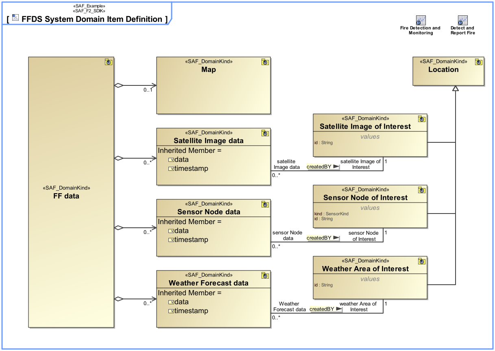
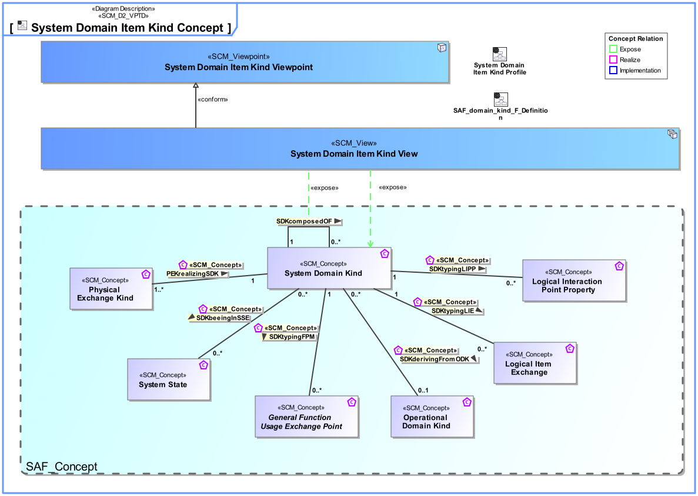
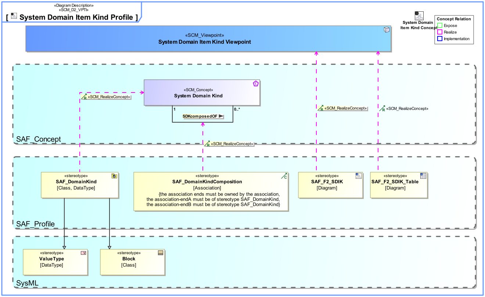

F2_SDIK System Domain Item Kind Viewpoint
| Domain | Aspect | Maturity |
|---|---|---|
| Functional | Taxonomy & Structure |

The System Domain Item Kind Viewpoint captures system wide concepts and collects type definitions for any exchanged item, e.g., information, material, or energy, of the Functional and Logical domain. Its purpose is to define these item types and their relationships. Furthermore, the System Domain Item Kind Viewpoint specifies the data types, entity types, related value types, and units that are used by the SOI. Note: Domain Item Kinds are used as types of function input and output in the Functional Domain, and for types of interfaces in the Logical Domain. They specify what is to be exchanged but not how.
The System Domain Item Kind Viewpoint supports the “System Requirements Definition Process” activities of the INCOSE SYSTEMS ENGINEERING HANDBOOK 2015 [§4.3] and contributes to the System Function, and the System Interface definition.
A block definition diagram (BDD) featuring Domain Item Kinds and their relationships in terms of generalization, composition, or general association. Note: Domain Item Kinds are managed in the domain knowledge package of the SOI, the Domain Item Kinds are visible and usable to all sub elements of the SOI. Domain Item Kinds shall be value types or blocks.
A tabular format listing the Domain Item Kinds, and their relationships.
The following Stereotypes / Model Elements are used in the Viewpoint:
The Diagram shows the concepts exposed by the viewpoint, and related concepts if necessary.

| Concept | Documentation |
|---|---|
| SDKcomposedOF | Specifies the fact that a System Domain Kind consists of one or more System Domain Kinds. |
| System Domain Kind | Specification for any kind of conceptual item (energy, material, information, etc.) to be exchanged on Functional or Logical Level. The System Domain Kind is agnostic to any realization on Physical Level. |
The Diagram shows the implementation of exposed concepts.

| Concept | Realization |
|---|---|
| SDKcomposedOF | SAF_DomainKindComposition |
| System Domain Kind | SAF_DomainKind |